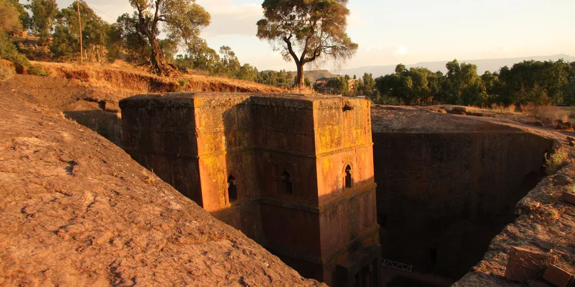

Sub-Saharan Africa
Ethiopia on a budget
Rock-hewn churches, highland trekking and coffee ceremonies unlike anywhere else in Africa. Parts of the country are under travel warnings, so check current advice before planning a route.
Photo: Bernard Gagnon, CC BY-SA 3.0, via Wikimedia Commons

Classic route
Addis Ababa, Harar, then south to the Bale Mountains and the Omo Valley. The northern circuit via Gondar, the Simien Mountains and Lalibela is off-limits while conflict continues. 2 weeks.
How much 14 places in Ethiopia cost
Daily budgets per person in US dollars: a hostel dorm or simple guesthouse, local food, local transport and the usual entry fees.
-
Addis Ababa
Browse Merkato, one of Africa's biggest open-air markets, meet the Lucy fossil at the National Museum and join a street coffee ceremony.
Bed $12 · Food $6 · Getting around $3 · Extras $4
Budget tip: Injera with shiro, a spiced chickpea stew, is a filling lunch for a couple of dollars.
$25per day -
Lalibela
Eleven medieval churches carved straight down into the rock, still used for worship by Orthodox pilgrims today.
Bed $14 · Food $7 · Getting around $3 · Extras $20
Budget tip: Lalibela is in Amhara, where several governments advise against all travel. Check current advice; if visits resume, festivals like Timkat need early bookings.
$44per day -
Simien Mountains
Multi-day treks along sheer escarpment edges, with gelada monkeys grazing beside the trail and views across jagged highland peaks.
Bed $10 · Food $8 · Getting around $6 · Extras $20
Budget tip: This park is in Amhara, under current travel warnings, so check advice first. A park scout is required, and Debark arranges treks cheaper than Gondar agencies.
$44per day -
Gondar
Castles built by 17th-century emperors and the angel-covered painted ceiling of Debre Berhan Selassie church, gateway to the Simien Mountains.
Bed $12 · Food $6 · Getting around $3 · Extras $8
Budget tip: Check current security in the Amhara region before travelling. If it's open, use Gondar as your base for arranging Simien Mountains treks.
$29per day -
Harar
A walled Muslim city of colorful alleys, spice markets and ancient shrines, where men hand-feed wild hyenas outside the gates at night.
Bed $12 · Food $6 · Getting around $3 · Extras $3
Budget tip: Watching the hyena feeding costs a few dollars. Buses from Dire Dawa take an hour, and guesthouses in the old town are cheap.
$24per day -
Bahir Dar
Lakeside city where boats visit painted island monasteries on Lake Tana, with the Blue Nile Falls a short trip away.
Bed $12 · Food $6 · Getting around $3 · Extras $8
Budget tip: Share boat hire to the monasteries with other travellers to cut costs. Minibuses to the Blue Nile Falls are cheap.
$29per day -
Axum
Giant carved granite stelae, ancient royal tombs and the chapel said to hold the Ark of the Covenant in this cradle of Ethiopian history.
Bed $12 · Food $6 · Getting around $3 · Extras $8
Budget tip: Check current conditions in Tigray before going. Hire a local guide at the ticket office to make sense of the sites.
$29per day -
Arba Minch
Boat past huge crocodiles in Lake Chamo, then climb to the Dorze highland villages with their tall beehive-shaped bamboo huts.
Bed $12 · Food $6 · Getting around $4 · Extras $10
Budget tip: Share a boat on Lake Chamo with other travellers. The Dorze villages offer simple homestays with home-cooked meals.
$32per day -
Konso
UNESCO-listed terraced landscape of walled stone villages, carved waka grave markers and generation poles in the southern highlands.
Bed $12 · Food $6 · Getting around $5 · Extras $10
Budget tip: Hire a guide through the local tourist office, which is required for village visits, and share the fee with other travellers.
$33per day -
Wenchi Crater Lake
Volcanic crater lake west of Addis Ababa with green slopes, horseback rides down to the shore and a boat to an island monastery.
Bed $12 · Food $6 · Getting around $6 · Extras $10
Budget tip: Take a minibus from Addis Ababa to Ambo, then a local bus to the crater rim, and use the community guides and horses.
$34per day -
Bale Mountains
Spot rare Ethiopian wolves on the high Sanetti Plateau among giant lobelias, then descend into the misty Harenna cloud forest.
Bed $12 · Food $7 · Getting around $5 · Extras $12
Budget tip: Arrange horses and guides at the park HQ in Dinsho. Nights on the plateau are freezing, so pack warm layers for camping.
$36per day -
Gheralta rock churches
Ancient churches carved into sandstone cliffs, some like Abuna Yemata reached only by climbing hand and foot to frescoed interiors.
Bed $12 · Food $6 · Getting around $8 · Extras $10
Budget tip: Check current security in Tigray before planning. Hire a scout at each church, and know that some climbs need a head for heights.
$36per day -
Omo Valley
Remote weekly markets of the Hamar, Karo and Mursi peoples in the far south-west, among Africa's most traditional cultures.
Bed $12 · Food $6 · Getting around $15 · Extras $15
Budget tip: Hire a guide in Jinka or Turmi. Always ask before photographing people and expect to pay per photo.
$48per day -
Danakil Depression
Neon sulfur springs at Dallol and the Erta Ale lava lake, in one of the hottest places on Earth.
Bed $15 · Food $8 · Getting around $15 · Extras $25
Budget tip: Only possible on an organised tour from Mekele. Check current safety advice for the Afar region before booking anything.
$63per day
Know before you go
Ethiopia on a budget: the basics
Currency
$1 = 162 ETB
Ethiopian birr
| Dollars to ETB | ETB to dollars | ||
|---|---|---|---|
| $1 | 162 ETB | 100 ETB | $0.619 |
| $5 | 808 ETB | 500 ETB | $3.10 |
| $10 | 1,615 ETB | 1,000 ETB | $6.19 |
| $20 | 3,230 ETB | 5,000 ETB | $30.96 |
| $50 | 8,076 ETB | 10,000 ETB | $61.91 |
| $100 | 16,151 ETB | 50,000 ETB | $310 |
A typical day here (about $44) is roughly 7,100 ETB.
Mid-market rate on 2026-10-05. Cash machines and exchange desks pay a little less.
Getting around
Ethiopian Airlines runs a wide domestic network, often with cheaper fares if you flew into Addis Ababa on the same airline. Selam and Sky Bus coaches and slower minibuses link towns, and the Addis Ababa to Djibouti railway stops at Dire Dawa, close to Harar. In Addis, local apps like Ride and Feres work like Uber.
Where to sleep
Budget hotels and simple pensions are common across the country, and Harar has a few traditional guesthouses inside the old walled city. Camping is possible in the Bale Mountains with a local guide.
What to eat
- Injera: spongy sour flatbread made from teff, used as plate and spoon
- Shiro: smooth spiced chickpea stew, a fasting-day staple
- Tibs: pan-fried meat with onion, pepper and rosemary
- Buna: Ethiopian coffee, often served in a home coffee ceremony
Money
Carry cash, since cards work mainly in bigger hotels in Addis, and ATMs are reliable mainly in cities. Haggling is normal for crafts and minibus fares for foreigners, and a small tip for guides and drivers is customary.
Phone data
Ethio Telecom and Safaricom Ethiopia sell SIMs with passport registration, coverage is good in towns, and mobile internet can be cut in some regions during unrest.
Heads up
Ethiopia uses its own calendar and counts hours from 6 a.m., so confirm whether a bus time is in Ethiopian or international time.
Ethiopia travel: quick answers
How much does a day in Ethiopia cost on a budget?
About $44 a day for one person, from $24 in Harar to $63 in Danakil Depression. That covers a hostel dorm or simple guesthouse, local food, local transport and the usual entry fees, so a week runs about $308 before flights.
When is the best time to visit Ethiopia?
October to February is the best time, with the most reliable weather for getting around.
What is the cheapest place to visit in Ethiopia?
Harar, at about $24 a day. A walled Muslim city of colorful alleys, spice markets and ancient shrines, where men hand-feed wild hyenas outside the gates at night.
How long do you need in Ethiopia?
Addis Ababa, Harar, then south to the Bale Mountains and the Omo Valley. The northern circuit via Gondar, the Simien Mountains and Lalibela is off-limits while conflict continues. 2 weeks.
How much is $1 in Ethiopia?
One US dollar is about 162 Ethiopian birr (ETB), going by the mid-market rate on 2026-10-05. So $20 is roughly 3,230 ETB, and a typical budget day of $44 comes to about 7,100 ETB.
How do you get around Ethiopia cheaply?
Ethiopian Airlines runs a wide domestic network, often with cheaper fares if you flew into Addis Ababa on the same airline. Selam and Sky Bus coaches and slower minibuses link towns, and the Addis Ababa to Djibouti railway stops at Dire Dawa, close to Harar. In Addis, local apps like Ride and Feres work like Uber.
What food should you try in Ethiopia?
Injera, spongy sour flatbread made from teff, used as plate and spoon. Shiro, smooth spiced chickpea stew, a fasting-day staple. Tibs, pan-fried meat with onion, pepper and rosemary. Buna, Ethiopian coffee, often served in a home coffee ceremony.
Is it safe to travel to Ethiopia?
Several governments, including the UK, advise against all travel to the Amhara region, home to Lalibela, Gondar, Bahir Dar and the Simien Mountains, because of armed conflict. Flights to Tigray are suspended, and restrictions can change at short notice. Check your government's current travel advice before planning a trip.
Planning around the seasons? See where to go in October, or compare the cheapest countries nearby.
Similar budgets nearby
- Cape Verde $45/day
- Eritrea $43/day
- Côte d'Ivoire $42/day
- Sierra Leone $40/day